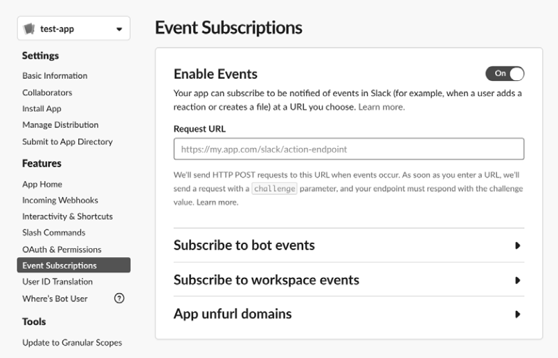

WebHooks
Webhooks are custom HTTP callback endpoints used:
• As a notification system for
certain application events:
◇ When new user sign-up
◇ When application error occurs
The originating site will make an HTTP request to the webhook URL
These HTTP requests help the company collect information about the website’s performance and visitors.
• As a notification system for
kick-start another process:
◇ When one action from an application needs to trigger an action on another application webhooks are a way of notifying the system to kick-start another process.
example: if a company wants to send a welcome email to every user who follows its social media account, it can use a webhook to connect the two applications.
• To
allow users to set up their webhook URLs (these settings pages are often vulnerable to SSRF)
Most of the time, an application’s webhook service is in its developers’ portal.
example: example, Slack allows application owners to set up a webhook via its app configuration page (
https://api.slack.com/apps/).
Under the Event Subscriptions heading, you can specify a URL at which Slack will notify you when special events happen.
The Request URL field of these webhook services is often vulnerable to SSRF.
 Bibliography:
•
Bug Bounty Bootcamp: The Guide to Finding and Reporting Web